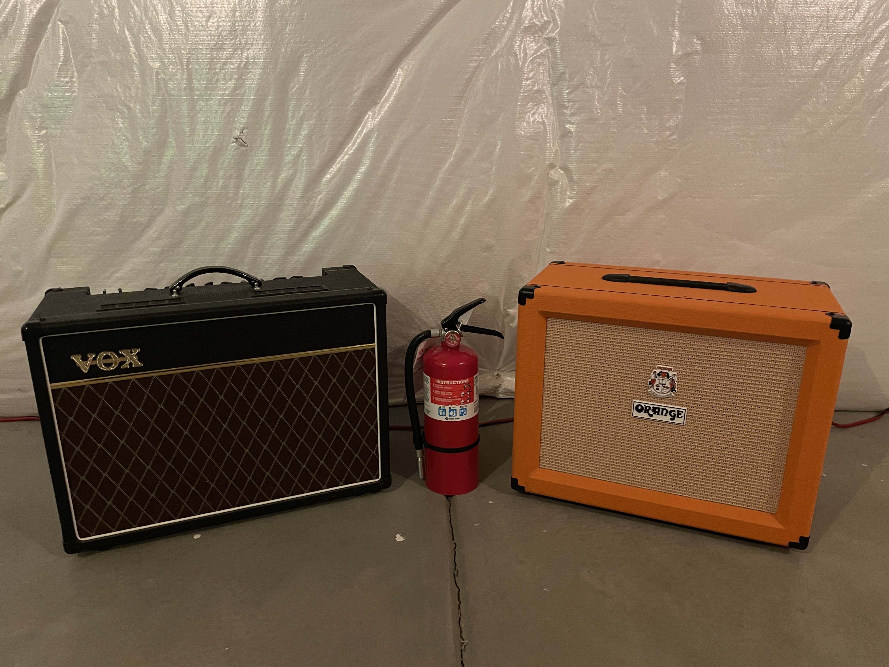
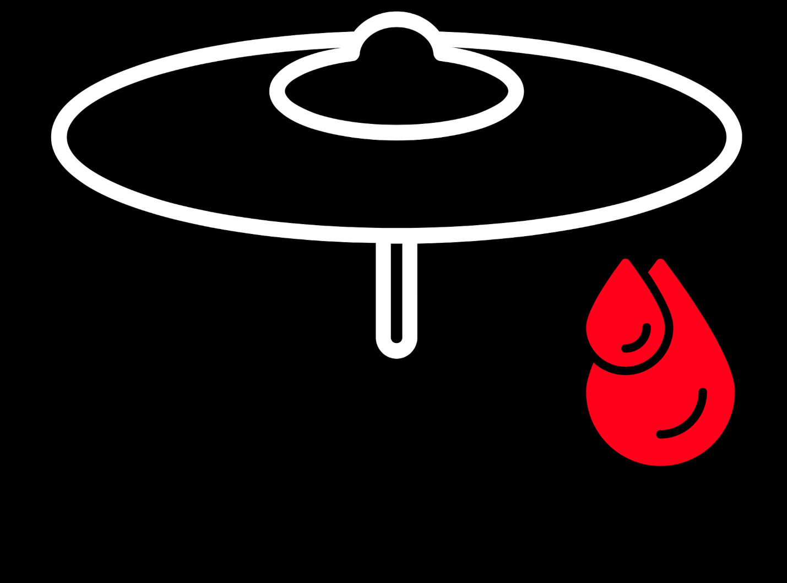
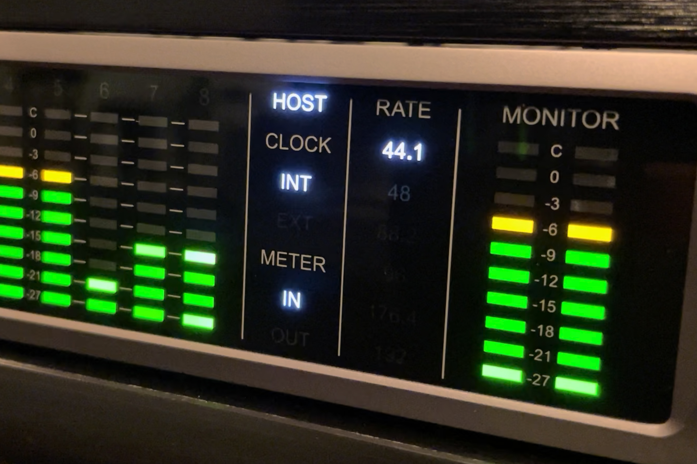

Tagged: Music Technology
Fire Safety for the Home Studio
Posted on March 27, 2022
A fire broke out at the Broncos stadium this past week, and just yesterday a wildfire sparked up and threatened to destroy part of Boulder. And as an unfortunate coincidence, I wanted to talk about fire safety today. So, instead of ruminating about how fires are now a year–round hazard in Colorado (on top of the seasonal hazards of floods, hail, lightning, and tornadoes), let’s talk about how to set up a home studio without burning your place down. Read More . . .
My Cymbal Bleed Saga
Posted on February 27, 2022
It’s been a tough week to stay focused. Hell, the news this morning alone was pretty exhausting. The carnage in Ukraine is bad enough, but this whole conflict has really broken the brains of a lot of people in the political circles I’m in.
Maybe someone can clear this up for me, but I just have a difficult time getting behind invading a country that didn’t attack you or your allies. And don’t get it twisted, I’m no big fan of America’s foreign policy, but let’s put our grown–up pants on and realize two things can be wrong at the same time.
There’s nothing like using the enduring frustrations of recording live drums to take your mind off of things. Read More . . .
The Enduring Confusion Around High Sample Rates
Posted on November 28, 2021
Now that I’m the proprietor of a(n admittedly humble) home studio, I like to think that I’ve really come to terms with the nuts and bolts of music technology. But the truth is, I still have a lot to learn, as mastering even a single effect like compression can take some time.
There are other topics that some people think are best left undiscussed. I’ve really gone on a deep dive in the last couple of months trying to make sense of sample rates, particularly the case for using a high sample rate. Read More . . .